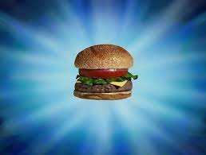

Krabby Patty

Description:
The Krabby Patty is the Krusty Krab's signature and most popular food item. It is a meatless hamburger of sorts made from seaweed-sea buns, undersea vegetables, condiments, and a patty; it can also be ordered with cheese and or, pickles. Created by Mr. Krabs and Plankton.
Ingredients:
- Krabby Patty
- Sea Sesame seeds
- Sea Bottom bun
- Sea Ketchup
- Sea Mustard
- Sea Mayonnaise
- Sea Relish
- Sea cheese
- Sea pickles
- Sea lettuce
- Sea tomatoes
- Sea onions
- Sea Tartar sauce
- Sea Secret ingredient
- Sea "Chopped Love"
- Sea Top bun
Steps:
- Start with the Sesame seed bun
- Then, place your Patty on bottom bun.
- Next, place your cheese, lettuce, pickles, tomato and any condiments you like, dont forget the secret ingredient of course.
- Lastly, complete the Krabby Patty by placing the top bun